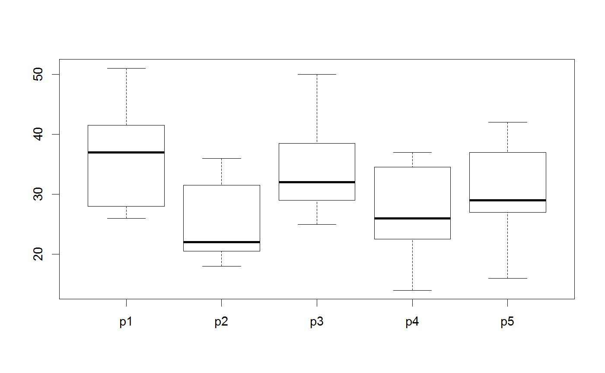
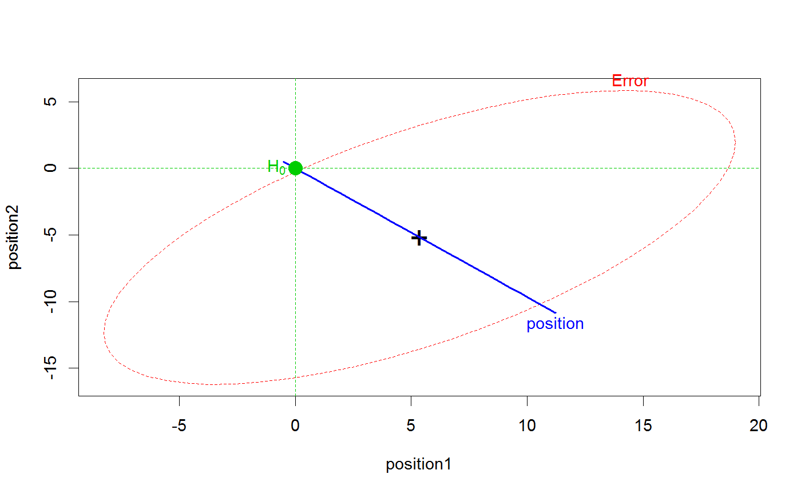
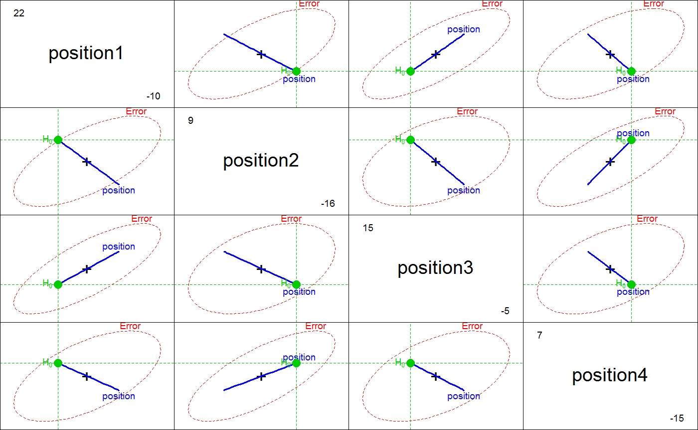

<!-- Generated by pkgdown: do not edit by hand -->
<!DOCTYPE html>
<html>
  <head>
  <meta charset="utf-8">
<meta http-equiv="X-UA-Compatible" content="IE=edge">
<meta name="viewport" content="width=device-width, initial-scale=1.0">

<title>Response Speed in a Probe Experiment — Probe • heplots</title>

<!-- jquery -->
<script src="https://code.jquery.com/jquery-3.1.0.min.js" integrity="sha384-nrOSfDHtoPMzJHjVTdCopGqIqeYETSXhZDFyniQ8ZHcVy08QesyHcnOUpMpqnmWq" crossorigin="anonymous"></script>
<!-- Bootstrap -->
<link href="https://maxcdn.bootstrapcdn.com/bootswatch/3.3.7/cerulean/bootstrap.min.css" rel="stylesheet" crossorigin="anonymous">

<script src="https://maxcdn.bootstrapcdn.com/bootstrap/3.3.7/js/bootstrap.min.js" integrity="sha384-Tc5IQib027qvyjSMfHjOMaLkfuWVxZxUPnCJA7l2mCWNIpG9mGCD8wGNIcPD7Txa" crossorigin="anonymous"></script>

<!-- Font Awesome icons -->
<link href="https://maxcdn.bootstrapcdn.com/font-awesome/4.6.3/css/font-awesome.min.css" rel="stylesheet" integrity="sha384-T8Gy5hrqNKT+hzMclPo118YTQO6cYprQmhrYwIiQ/3axmI1hQomh7Ud2hPOy8SP1" crossorigin="anonymous">


<!-- pkgdown -->
<link href="../pkgdown.css" rel="stylesheet">
<script src="../jquery.sticky-kit.min.js"></script>
<script src="../pkgdown.js"></script>
  
  
<!-- mathjax -->
<script src='https://mathjax.rstudio.com/latest/MathJax.js?config=TeX-AMS-MML_HTMLorMML'></script>

<!--[if lt IE 9]>
<script src="https://oss.maxcdn.com/html5shiv/3.7.3/html5shiv.min.js"></script>
<script src="https://oss.maxcdn.com/respond/1.4.2/respond.min.js"></script>
<![endif]-->


  </head>

  <body>
    <div class="container template-reference-topic">
      <header>
      <div class="navbar navbar-default navbar-fixed-top" role="navigation">
  <div class="container">
    <div class="navbar-header">
      <button type="button" class="navbar-toggle collapsed" data-toggle="collapse" data-target="#navbar">
        <span class="icon-bar"></span>
        <span class="icon-bar"></span>
        <span class="icon-bar"></span>
      </button>
      <a class="navbar-brand" href="../index.html">heplots</a>
    </div>
    <div id="navbar" class="navbar-collapse collapse">
      <ul class="nav navbar-nav">
        <li>
  <a href="../index.html">
    <span class="fa fa-home fa-lg"></span>
     
  </a>
</li>
<li>
  <a href="../reference/index.html">Reference</a>
</li>
      </ul>
      
      <ul class="nav navbar-nav navbar-right">
        
      </ul>
    </div><!--/.nav-collapse -->
  </div><!--/.container -->
</div><!--/.navbar -->

      
      </header>

      <div class="row">
  <div class="col-md-9 contents">
    <div class="page-header">
    <h1>Response Speed in a Probe Experiment</h1>
    </div>

    
    <p>Data from a probe experiment testing whether immediate memory for
 sentenses is influenced by the phrase structure of the sentence.
 The data sets come from Timm (1975), Ex. 3.14 and Ex. 3.16 (p.244)</p>
<p>Procedure: Subjects listened to tape-recorded sentences.  Each
 sentence was followed by a "probe word" from one of 5 positions
 within the sentence.  The subject had to respond with the word
 which immediately followed the probe word in the sentence.  The
 dependent measure is response speed = k(1/reaction time).</p> 
<p>Sample sentence:</p><pre>
*       The tall man met the young girl who got the new hat.
Pos'ns:      1    2            3    4    5
Function:   ADJ1 SUBJ        ADJ2  OBJ  REL.PN
</pre>

    <p>In <code>Probe2</code>, there are two groups of subjects, 
pre-selected on a test of short term memory.</p>
    

    <pre class="usage"><span class='fu'>data</span>(<span class='no'>Probe1</span>)
  <span class='fu'>data</span>(<span class='no'>Probe2</span>)</pre>
        
    <h2 class="hasAnchor" id="format"><a class="anchor" href="#format"></a>Format</h2>

    <p><code>Probe1</code>: A data frame with 11 observations on the following 5 variables.</p><dl class='dl-horizontal'>
    <dt><code>p1</code></dt><dd><p>speed at position 1</p></dd>
    <dt><code>p2</code></dt><dd><p>speed at position 2</p></dd>
    <dt><code>p3</code></dt><dd><p>speed at position 3</p></dd>
    <dt><code>p4</code></dt><dd><p>speed at position 4</p></dd>
    <dt><code>p5</code></dt><dd><p>speed at position 5</p></dd>
  </dl>
    <p><code>Probe2</code>: A data frame with 20 observations on the following 6 variables.</p><dl class='dl-horizontal'>
    <dt><code>stm</code></dt><dd><p>Short term memory capacity: a factor with levels <code>High</code> <code>Low</code></p></dd>
    <dt><code>p1</code></dt><dd><p>speed at position 1</p></dd>
    <dt><code>p2</code></dt><dd><p>speed at position 2</p></dd>
    <dt><code>p3</code></dt><dd><p>speed at position 3</p></dd>
    <dt><code>p4</code></dt><dd><p>speed at position 4</p></dd>
    <dt><code>p5</code></dt><dd><p>speed at position 5</p></dd>
  </dl>
    
    <h2 class="hasAnchor" id="details"><a class="anchor" href="#details"></a>Details</h2>

    <p>These data sets (fictitious) are used as examples of single-sample and two-sample
profile analysis or simple repeated measure designs with structured
contrasts.</p>
    
    <h2 class="hasAnchor" id="source"><a class="anchor" href="#source"></a>Source</h2>

    <p>Timm, N. (1975)
<em>Multivariate analysis, with applications in education and psychology</em>
Brooks/Cole.</p>
    

    <h2 class="hasAnchor" id="examples"><a class="anchor" href="#examples"></a>Examples</h2>
    <pre class="examples"><div class='input'><span class='fu'>data</span>(<span class='no'>Probe1</span>)
<span class='fu'>boxplot</span>(<span class='no'>Probe1</span>)</div><div class='img'></div><div class='input'>
<span class='no'>pmod1</span> <span class='kw'>&lt;-</span> <span class='fu'>lm</span>(<span class='fu'>cbind</span>(<span class='no'>p1</span>,<span class='no'>p2</span>,<span class='no'>p3</span>,<span class='no'>p4</span>,<span class='no'>p5</span>) ~ <span class='fl'>1</span>, <span class='kw'>data</span><span class='kw'>=</span><span class='no'>Probe1</span>)
<span class='no'>idata</span> <span class='kw'>&lt;-</span> <span class='fu'>data.frame</span>(<span class='kw'>position</span><span class='kw'>=</span><span class='fu'>factor</span>(<span class='fl'>1</span>:<span class='fl'>5</span>))

<span class='fu'>library</span>(<span class='no'>car</span>)
(<span class='no'>pmod1.aov</span> <span class='kw'>&lt;-</span> <span class='fu'><a href='http://www.rdocumentation.org/packages/car/topics/Anova'>Anova</a></span>(<span class='no'>pmod1</span>, <span class='kw'>idata</span><span class='kw'>=</span><span class='no'>idata</span>, <span class='kw'>idesign</span><span class='kw'>=</span>~<span class='no'>position</span>))</div><div class='output co'>#&gt; <span class='message'>Note: model has only an intercept; equivalent type-III tests substituted.</span></div><div class='output co'>#&gt; 
#&gt; Type III Repeated Measures MANOVA Tests: Pillai test statistic
#&gt;             Df test stat approx F num Df den Df    Pr(&gt;F)    
#&gt; (Intercept)  1   0.96312   261.15      1     10 1.705e-08 ***
#&gt; position     1   0.75177     5.30      4      7   0.02767 *  
#&gt; ---
#&gt; Signif. codes:  0 <U+0091>***<U+0092> 0.001 <U+0091>**<U+0092> 0.01 <U+0091>*<U+0092> 0.05 <U+0091>.<U+0092> 0.1 <U+0091> <U+0092> 1</div><div class='input'>
<span class='co'># using default contrasts (p5 as reference level)</span>
<span class='fu'><a href='heplot.html'>heplot</a></span>(<span class='no'>pmod1</span>, <span class='kw'>manova</span><span class='kw'>=</span><span class='no'>pmod1.aov</span>, <span class='kw'>iterm</span><span class='kw'>=</span><span class='st'>"position"</span>, <span class='kw'>type</span><span class='kw'>=</span><span class='st'>"III"</span>, <span class='kw'>idata</span><span class='kw'>=</span><span class='no'>idata</span>, <span class='kw'>idesign</span><span class='kw'>=</span>~<span class='no'>position</span>)</div><div class='img'></div><div class='input'><span class='fu'>pairs</span>(<span class='no'>pmod1</span>, <span class='kw'>manova</span><span class='kw'>=</span><span class='no'>pmod1.aov</span>, <span class='kw'>iterm</span><span class='kw'>=</span><span class='st'>"position"</span>, <span class='kw'>type</span><span class='kw'>=</span><span class='st'>"III"</span>, <span class='kw'>idata</span><span class='kw'>=</span><span class='no'>idata</span>, <span class='kw'>idesign</span><span class='kw'>=</span>~<span class='no'>position</span>)</div><div class='img'></div><div class='input'>
<span class='co'># contrasts for substantative hypotheses regarding</span>
<span class='co'># sentence position effects</span>
<span class='no'>C</span> <span class='kw'>&lt;-</span> <span class='fu'>matrix</span>(<span class='fu'>c</span>(
        <span class='fl'>1</span>, <span class='fl'>1</span>, -<span class='fl'>1</span>, -<span class='fl'>1</span>, <span class='fl'>0</span>,
        <span class='fl'>1</span>, -<span class='fl'>1</span>, <span class='fl'>1</span>, -<span class='fl'>1</span>, <span class='fl'>0</span>,
        <span class='fl'>1</span>, -<span class='fl'>1</span>, -<span class='fl'>1</span>, <span class='fl'>1</span>, <span class='fl'>0</span>,
        <span class='fl'>1</span>, <span class='fl'>1</span>, <span class='fl'>1</span>, <span class='fl'>1</span>, -<span class='fl'>4</span>), <span class='fl'>5</span>, <span class='fl'>4</span>)
<span class='fu'>rownames</span>(<span class='no'>C</span>) <span class='kw'>&lt;-</span> <span class='fu'>paste</span>(<span class='st'>"p"</span>, <span class='fl'>1</span>:<span class='fl'>5</span>, <span class='kw'>sep</span><span class='kw'>=</span><span class='st'>""</span>)
<span class='fu'>colnames</span>(<span class='no'>C</span>) <span class='kw'>&lt;-</span> <span class='fu'>c</span>(<span class='st'>"SubPred"</span>, <span class='st'>"AdjNoun"</span>, <span class='st'>"SPxAN"</span>, <span class='st'>"RelPN"</span>)

<span class='fu'>contrasts</span>(<span class='no'>idata</span>$<span class='no'>position</span>)<span class='kw'>&lt;-</span> <span class='no'>C</span>
(<span class='no'>pmod1.aov</span> <span class='kw'>&lt;-</span> <span class='fu'><a href='http://www.rdocumentation.org/packages/car/topics/Anova'>Anova</a></span>(<span class='no'>pmod1</span>, <span class='kw'>idata</span><span class='kw'>=</span><span class='no'>idata</span>, <span class='kw'>idesign</span><span class='kw'>=</span>~<span class='no'>position</span>))</div><div class='output co'>#&gt; <span class='message'>Note: model has only an intercept; equivalent type-III tests substituted.</span></div><div class='output co'>#&gt; 
#&gt; Type III Repeated Measures MANOVA Tests: Pillai test statistic
#&gt;             Df test stat approx F num Df den Df    Pr(&gt;F)    
#&gt; (Intercept)  1   0.96312   261.15      1     10 1.705e-08 ***
#&gt; position     1   0.75177     5.30      4      7   0.02767 *  
#&gt; ---
#&gt; Signif. codes:  0 <U+0091>***<U+0092> 0.001 <U+0091>**<U+0092> 0.01 <U+0091>*<U+0092> 0.05 <U+0091>.<U+0092> 0.1 <U+0091> <U+0092> 1</div><div class='input'><span class='fu'><a href='heplot.html'>heplot</a></span>(<span class='no'>pmod1</span>, <span class='kw'>manova</span><span class='kw'>=</span><span class='no'>pmod1.aov</span>, <span class='kw'>iterm</span><span class='kw'>=</span><span class='st'>"position"</span>, <span class='kw'>type</span><span class='kw'>=</span><span class='st'>"III"</span>, <span class='kw'>idata</span><span class='kw'>=</span><span class='no'>idata</span>, <span class='kw'>idesign</span><span class='kw'>=</span>~<span class='no'>position</span>)</div><div class='img'></div><div class='input'><span class='fu'>pairs</span>(<span class='no'>pmod1</span>, <span class='kw'>manova</span><span class='kw'>=</span><span class='no'>pmod1.aov</span>, <span class='kw'>iterm</span><span class='kw'>=</span><span class='st'>"position"</span>, <span class='kw'>type</span><span class='kw'>=</span><span class='st'>"III"</span>, <span class='kw'>idata</span><span class='kw'>=</span><span class='no'>idata</span>, <span class='kw'>idesign</span><span class='kw'>=</span>~<span class='no'>position</span>)</div><div class='img'></div><div class='input'>
</div></pre>
  </div>
  <div class="col-md-3 hidden-xs hidden-sm" id="sidebar">
    <h2>Contents</h2>
    <ul class="nav nav-pills nav-stacked">
      
      <li><a href="#format">Format</a></li>

      <li><a href="#details">Details</a></li>

      <li><a href="#source">Source</a></li>
      
      <li><a href="#examples">Examples</a></li>
    </ul>

  </div>
</div>

      <footer>
      <div class="copyright">
  <p>Developed by John Fox, Michael Friendly.</p>
</div>

<div class="pkgdown">
  <p>Site built with <a href="http://hadley.github.io/pkgdown/">pkgdown</a>.</p>
</div>

      </footer>
   </div>

  </body>
</html>
